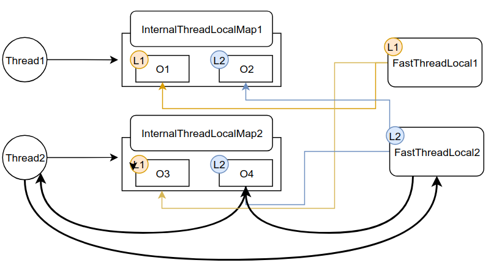

- FastThreadLocal
- Recycler
FastThreadLocal
FastThreadLocal的使用
示例代码
1 | private static FastThreadLocal<Object> threadLocal0 = new FastThreadLocal<Object>() { |
与ThreadLocal相同,就算Thread中获取了同一个object,两个线程对这个object的更变都不会相互影响
示例的运行结果:
1 | java.lang.Object@7b21370 |
也就说两个线程拿到的Object的内存地址不相同
把示例程序改为以下,判断两个线程是否会相互影响:
1 | public static void main(String[] args) { |
运行结果如下
1 | java.lang.Object@4ce83a23 |
也就是说Thread1不管如何去修改,Thread2拿到的永远和它最初拿到的那个对象相等
FastThreadLocal实现机制
- FastThreadLocal的创建
- FastThreadLocal的get()方法实现
- FastThreadLocal的set()方法实现
FastThreadLocal的创建
看FastThreadLocal的构造方法
1 | private final int index; |
FastThreadLocal示例间的index值独立,值为0,1,2,3…,如下:
1 | //io.netty.util.internal.InternalThreadLocalMap#nextVariableIndex |
也就是说每个FastThreadLocal都有一个唯一的Index,当做是身份标示
FastThreadLocal的get()方法实现
步骤:
- 获取ThreadLocalMap
通过之前的index获取 - 直接通过索引取出对象
- 初始化
如果还没初始化就初始化,只有首次调用get()时会触发
1.获取ThreadLocalMap
1 | //io.netty.util.concurrent.FastThreadLocal#get() |
示例中的是普通的Thread,所以是用slowGet()获取ThreadLocalMap
1 | //io.netty.util.internal.InternalThreadLocalMap#slowGet |
这个UnpaddedInternalThreadLocalMap.slowThreadLocalMap实际上是JDK的ThreadLocal.也就是说netty的InternalThreadLocalMap实际上是基于JDK的ThreadLocal实现
1 | static final ThreadLocal<InternalThreadLocalMap> slowThreadLocalMap = new ThreadLocal<InternalThreadLocalMap>(); |
之所以是slow,是因为他需要通过ThreadLocal去获取InternalThreadLocalMap.
下面再看一下fastGet(),也就是直接在FastThreadLocalThread线程中使用时会调用的快速获取ThreadLocalMap的方式
1 | //io.netty.util.internal.InternalThreadLocalMap#fastGet |
FastThreadLocalThread线程自己就维护了一个threadLocalMap变量,通过这个就能拿到InternalThreadLocalMap.
也就是说,普通的Thread是通过JDK的TreadLocal中维护<线程,InternalThreadLocalMap>的键值对获取InternalThreadLocalMap,而FastThreadLocalThread中是自带InternalThreadLocalMap
2.直接通过索引取出对象
通过上一步获取到线程私有的InternalThreadLocalMap后,又回到这一步:
1 | //io.netty.util.concurrent.FastThreadLocal#get() |
接下来会通过这个InternalThreadLocalMap,取出对象:
1 | //io.netty.util.concurrent.FastThreadLocal#get(io.netty.util.internal.InternalThreadLocalMap) |
也就是说,首先获取这个线程私有的InternalThreadLocalMap,然后通过当前FastThreadLocal对象的标示从InternalThreadLocalMap获取这个FastThreadLocal对象对应的Object
此时我们会发现,所谓的InternalThreadLocalMap,实际上是数组实现的
1 | //io.netty.util.internal.InternalThreadLocalMap#indexedVariable |

3.初始化
首次获取时值为UNSET,此时再调用客户端代码中的initialValue()把new Object()放入ThreadLocalMap
FastThreadLocal的set()方法实现
- 获取ThreadLocalMap
基于数组实现的 - 直接通过索引set对象
- remove对象
如果是UNSET对象,调用remove方法
示例程序中的set()会到下面这步
1 | //io.netty.util.concurrent.FastThreadLocal#set(V) |
获取到ThreadLocalMap后set():
1 | //io.netty.util.concurrent.FastThreadLocal#set(io.netty.util.internal.InternalThreadLocalMap, V) |
简单看一下3.remove对象的remove(threadLocalMap):
1 | //io.netty.util.concurrent.FastThreadLocal#remove(io.netty.util.internal.InternalThreadLocalMap) |